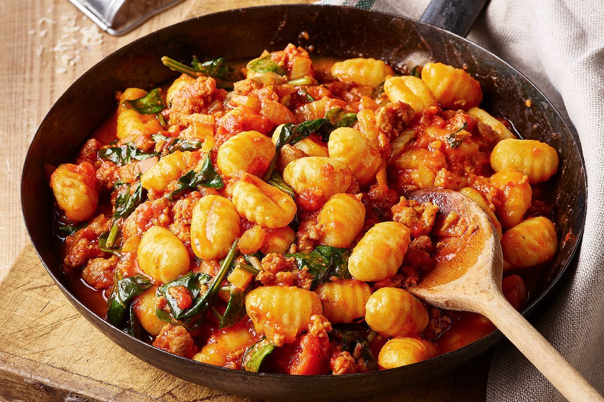

Gnocchi
Home

A simple to make dish
Gnocchi is simple to make with just three ingredients: mashed potato, flour, and egg.
This recipe is one my family has used for generations.
Ingredients
- Potatoes: use starchy potatoes, such as russets
- Flour: All-purposed flour absorbs moisture and helps create gluten
- Egg An egg lends moisture and acts as a binder, which means it helps hold the dumplings together
Steps
Here's a very brief overwiev of what you can expect when you make gnocchi
- Boil and mash the potatoes
- Combine the ingredients, then knead into a ball
- Shape the dough into "snakes"
- Cut the snakes into pieces
- Boil and drain the gnocchi